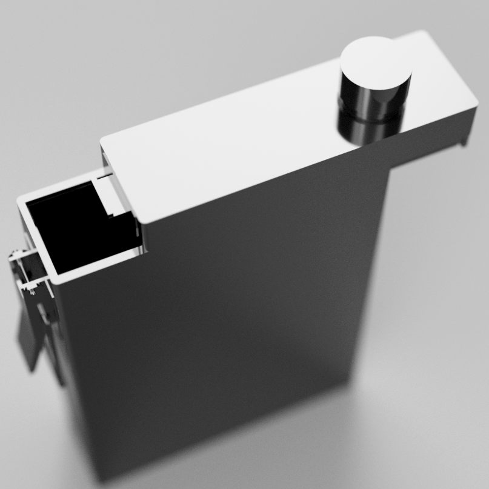
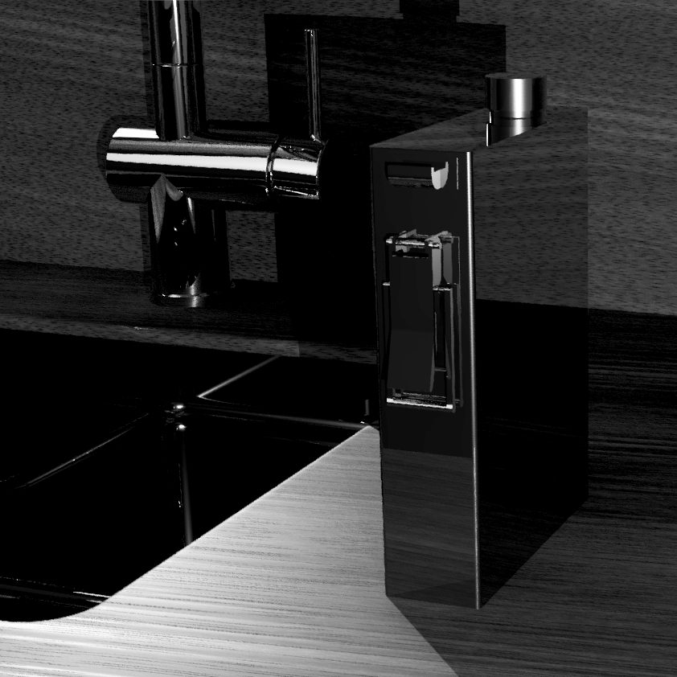
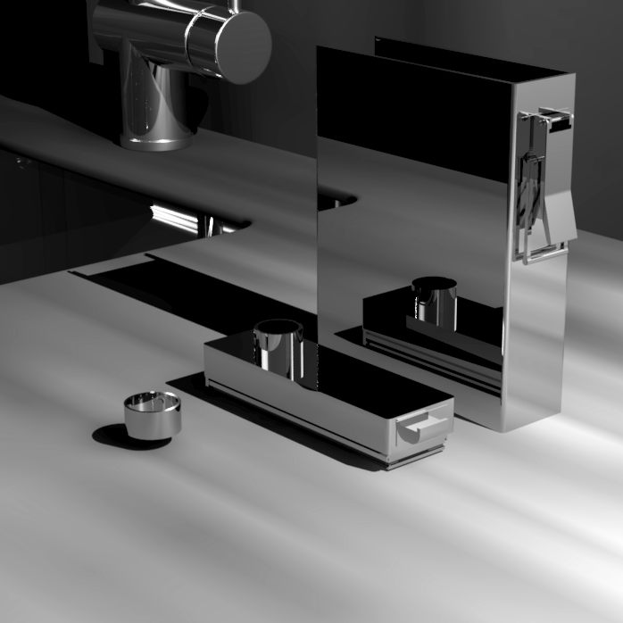
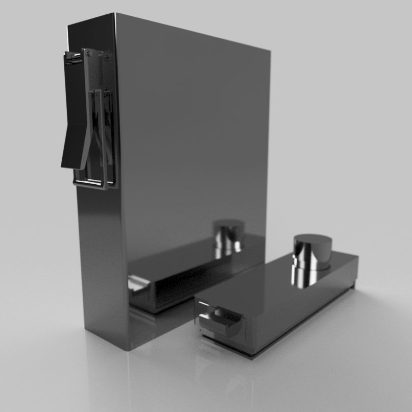
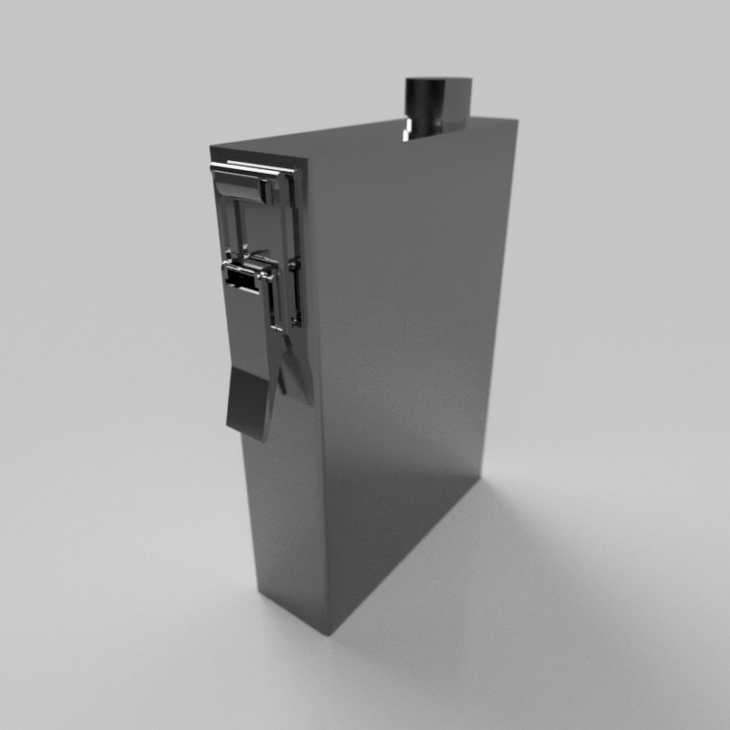
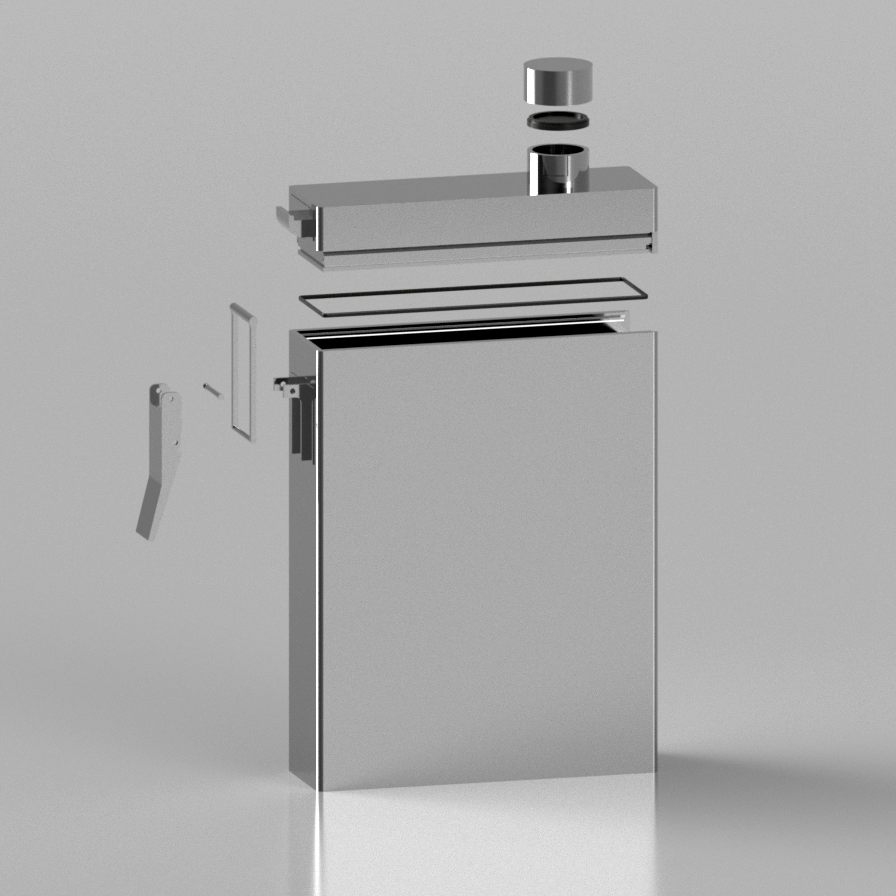

During a design lecture, a case was made for an existing flat-bottle design. It was praised for how well it worked as a light travel companion and its user-friendly design. However, during this moment of admiration, all I could find myself thinking about was “How do you clean it?”
What came from this was the Magazine Bottle. A double-walled aluminium bottle that was designed to hold 500ml of liquid. With simple, yet engaging mechanical components, like a clicking twist-top spout for drinking and a latched sliding top.


There have been many imitations of the original flat bottle design from Memo, and it has become somewhat of a standard for bottles to fit into small, satchel-type bags. Though few, if not any, have addressed the challenges the bottle brings. Keeping a bottle flat without providing the access a normal bottle shape creates is a sanitary issue, as a bottle harder to clean is harder to keep.
The sliding lid design came as a means to address the issues of flat water bottles, as well as a feature to create a more engaging experience for users. An enjoyable process promoting users to engage more often, staying hydrated.


The development and ideation process for the Magazine Bottle was a challenge, as the task was not only to solve the design problems identified, but also to create more by addressing them. Designs that included complex hinges and small annoying mechanical components could not be utilised as they created more surface area for cleaning and made additional accessibility challenges.
The prototyping stage for the Magazine Bottle was extensive, as this design required specific tolerances and controlled material dimensions. Factors regarding temperature control, liquid volume and component fittings all fluctuated if a single aspect of the design was changed. A balancing act that required different approaches to sealing, mechanical sliding, and formatting the design.

Resolving in a 3D printed prototype that demonstrated all the mechanical and user experiences that had been designed.